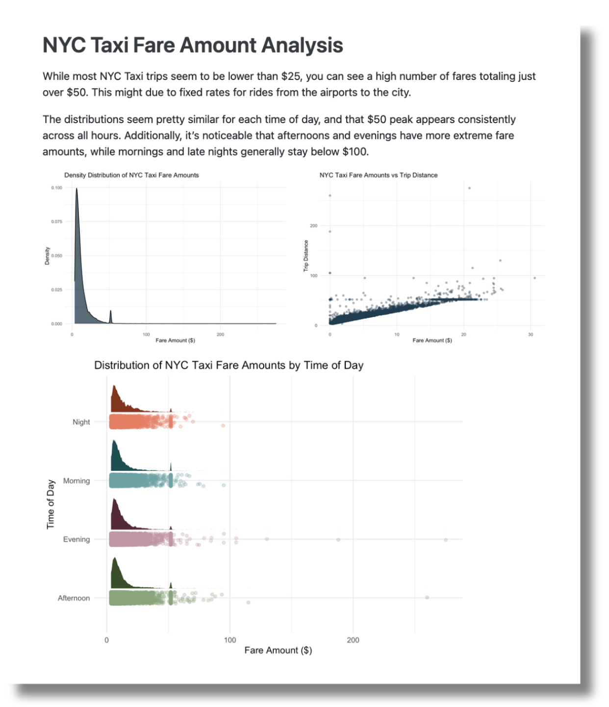

library(sparklyr)2023-09-13
As data enthusiasts, we love uncovering stories in datasets. With Posit’s RStudio Desktop and Databricks Lakehouse, you can analyze data with dplyr, create impressive graphs with ggplot2, and weave data narratives with Quarto, all using data stored in Databricks.
Posit and Databricks recently announced a strategic partnership to provide a simplified experience for Posit and Databricks users. By combining Posit’s RStudio with Databricks, you can dive into any data stored on the Databricks Lakehouse Platform, from small data sets to large streaming data. Posit provides data scientists with user-friendly and code-first environments and tools for working with data and writing code. Databricks provides a scaleable end-to-end architecture for data storage, compute, AI, and governance.
One objective for the partnership is to improve support for Spark Connect in R through sparklyr, simplifying the process of connecting to Databricks clusters via Databricks Connect. In the future, Posit and Databricks will offer streamlined integration to automate many of these steps.
We’ll take a tour of the enhanced sparklyr experience with a subset of the New York City taxi trip record data with over 10,000,000 rows and a total file size of 37 gigabytes.
To begin, you need to set up the connection between RStudio and Databricks.
To use Databricks Connect, you need three configuration items. Log in to a Databricks account to obtain:
https://databricks-instance.cloud.databricks.com/?o=12345678910111213https://<databricks-instance>/#/setting/clusters/. More information can be found in the Databricks docs. Alternatively, go to “Compute” in the sidebar and add a cluster.Now, head to RStudio.
To safely connect your Databricks and RStudio accounts, set the Databricks Workspace, access token, and cluster ID as environment variables. Environment variables keep sensitive information separate from your code, reducing the risk of exposing confidential data in your scripts.
The usethis package has a handy function for opening the R environment. Run the code below in your console to access the .Renviron file:
usethis::edit_r_environ()This function automatically opens the .Renviron file for editing. Set up the Databricks Workspace URL, access token, and cluster ID in the .Renviron file with the following names: DATABRICKS_HOST for the URL, DATABRICKS_TOKEN for the access token, and DATABRICKS_CLUSTER_ID for the cluster ID. For example:
DATABRICKS_HOST=https://databricks-instance.cloud.databricks.com/?o=12345678910111213
DATABRICKS_TOKEN=1ab2cd3ef45ghijklmn6o78qrstuvwxyz
DATABRICKS_CLUSTER_ID=1234-567891-1a23bcdeYour RStudio may look like this:
Save the .Renviron file and restart the R session. Now, your environment is set up to connect to Databricks!
The sparklyr package is a powerful R package that allows you to work with Apache Spark, a suite of data processing, SQL, and advanced analytics APIs. With sparklyr, you can leverage the capabilities of Spark directly from within the R environment. Connections made with sparklyr will also leverage the Connections Pane, a user-friendly way to navigate and view your data.
At Posit, we have been working to update and improve the sparklyr package. Spark Connect requires a tool called gRPC to work. The Spark team offers two ways to use it: one with Scala and the other with Python. In the development version of sparklyr, we use reticulate to add features like dplyr, DBI support, and integration with RStudio’s Connection pane to the Python API. To make improvements and fixes faster, we’ve separated the Python part into its own package, pysparklyr.
Access the new capabilities of sparklyr by installing the development versions of sparklyr and pysparklyr in RStudio:
library(remotes)
install_github("sparklyr/sparklyr")
install_github("mlverse/pysparklyr")The sparklyr package requires specific Python components to communicate with Databricks Connect. To set up these components, run the following helper function:
pysparklyr::install_pyspark()Now, you can load the sparklyr package. Sparklyr will pick up on the preset environment variables that you configured above.
library(sparklyr)Next, use spark_connect() to open the connection to Databricks. You can tell sparklyr that you are connecting to a Spark cluster by setting method = "databricks_connect".
sc <- spark_connect(method = "databricks_connect")If the following error pops up:
# Error in `import_check()`:
# ! Python library 'databricks.connect' is not available in the
# 'r-sparklyr' virtual environment. Install all of the needed python libraries
# using: pysparklyr::install_pyspark(virtualenv_name = "r-sparklyr")Run the provided script to install the required Python packages:
pysparklyr::install_pyspark(virtualenv_name = "r-sparklyr")With that, you should see the data in the Connections pane in the upper right-hand of RStudio.
Congratulations, you’ve connected your session with Databricks!
RStudio can connect to many databases at once. Using the RStudio Connections Pane, you can check which databases you’re connected to and which ones are currently in use.
The new integration with Spark allows you to browse data managed in Unity Catalog, populating the Connections Pane with the same structure found in the Databricks Data Explorer.
In RStudio, you can navigate the data by expanding from the top level all the way down to the table you wish to explore. When you expand the table, you can see its columns and data types. You can also click on the table icon on the right side of the table name to see the first 1,000 rows of the data:
The dbplyr package bridges R and databases by allowing you to access remote database tables as if they were in-memory data frames. In addition, it translates dplyr verbs into SQL queries, making it easy to work with the database data using familiar R syntax.
Once your connection to Databricks has been set up, you can use dbplyr’s tbl() and in_catalog() functions to access any table following the order of levels in the catalog: Catalog, Database, and Table.
In the example below, "samples" is the Catalog, "nytaxi" is the Database, and "trips" is the Table. Save the table reference in the object trips.
library(dplyr)
library(dbplyr)
trips <- tbl(sc, in_catalog("samples", "nyctaxi", "trips"))
trips# Source: spark<samples.nyctaxi.trips> [?? x 6]
tpep_pickup_datetime tpep_dropoff_datetime trip_distance fare_amount
<dttm> <dttm> <dbl> <dbl>
1 2016-02-14 08:52:13 2016-02-14 09:16:04 4.94 19
2 2016-02-04 10:44:19 2016-02-04 10:46:00 0.28 3.5
3 2016-02-17 09:13:57 2016-02-17 09:17:55 0.7 5
4 2016-02-18 02:36:07 2016-02-18 02:41:45 0.8 6
5 2016-02-22 06:14:41 2016-02-22 06:31:52 4.51 17
6 2016-02-04 22:45:02 2016-02-04 22:50:26 1.8 7
7 2016-02-15 07:03:28 2016-02-15 07:18:45 2.58 12
8 2016-02-25 11:09:26 2016-02-25 11:24:50 1.4 11
9 2016-02-13 08:28:18 2016-02-13 08:36:36 1.21 7.5
10 2016-02-13 16:03:48 2016-02-13 16:10:24 0.6 6
# ℹ more rows
# ℹ 2 more variables: pickup_zip <int>, dropoff_zip <int>Now, you can proceed to work with the trips data!
Since you have accessed the data via dplyr, you can perform data manipulations using your favorite dplyr functions. Below, we use the new native R pipe |> introduced in R 4.1. You could also use the magrittr pipe %>% for your dplyr operations. To learn more about this native R pipe and how it differs from the magrittr pipe, visit the tidyverse blog.
You can clean and explore the dataset by using dplyr commands on the taxi object. According to the NYC Taxi & Limousine Commission, the initial cab fare for taxis is $3. To remove data points below $3, you can use filter(). If you want to find out more about cab fares, you can use summarize() to calculate the minimum, average, and maximum fare amounts.
trips |>
filter(fare_amount > 3) |>
summarize(
min_fare = min(fare_amount, na.rm = TRUE),
avg_fare = mean(fare_amount, na.rm = TRUE),
max_fare = max(fare_amount, na.rm = TRUE)
)# Source: spark<?> [?? x 3]
min_fare avg_fare max_fare
<dbl> <dbl> <dbl>
1 3.5 12.4 275The minimum fare amount is $3.50, the average fare amount for a cab ride is $12.40, and the maximum fare is $275!
You can visualize your data to get a sense of the distribution of the fare amounts:
library(ggplot2)
trips |>
ggplot(aes(x = fare_amount)) +
geom_density() +
theme_minimal() +
labs(title = "Density Plot of NYC Taxi Fare Amounts",
xlab = "Fare Amount",
ylab = "Density")While most trips are lower than $25, you can see a high number of fares totaling just over $50. This might be due to fixed rates for rides from the airports to the city.
Now that you have a sense of the distribution of fare amounts, let’s create another visualization. In the following example, you create a new column called hour to show the time of day for each taxi trip. Then, you can use ggplot2 to create a custom visualization that displays how the fares are distributed at different times of the day.
trips |>
filter(fare_amount > 3) |>
mutate(
hour = case_when(
lubridate::hour(tpep_pickup_datetime) >= 18 ~ "Evening",
lubridate::hour(tpep_pickup_datetime) >= 12 &
lubridate::hour(tpep_pickup_datetime) < 18 ~ "Afternoon",
lubridate::hour(tpep_pickup_datetime) >= 6 &
lubridate::hour(tpep_pickup_datetime) < 12 ~ "Morning",
lubridate::hour(tpep_pickup_datetime) < 6 ~ "Night"
)
) |>
ggplot(aes(x = hour, y = fare_amount)) +
ggdist::stat_halfeye(
adjust = .5,
width = .6,
.width = 0,
justification = -.3,
point_colour = NA,
aes(fill = hour)
) +
geom_point(
size = 1.5,
alpha = .3,
position = position_jitter(seed = 1, width = .1),
aes(color = hour)
) +
coord_flip() +
theme_minimal() +
labs(title = "Distribution of NYC Taxi Fare Amounts by Time of Day",
y = "Fare Amount ($)",
x = "Time of Day") +
theme(legend.position = "none") +
scale_color_manual(
values = c(
"Morning" = "#70A3A6",
"Afternoon" = "#8AA67A",
"Evening" = "#BF96A3",
"Night" = "#E58066"
)
) +
scale_fill_manual(
values = c(
"Morning" = "#1F4F4F",
"Afternoon" = "#3B4F29",
"Evening" = "#542938",
"Night" = "#80361C"
)
)The distributions seem pretty similar for each time of day, and that $50 peak appears consistently across all hours. Additionally, it’s noticeable that afternoons and evenings have more extreme fare amounts, while mornings and late nights generally stay below $100.
Great, you’ve dug into your dataset. Now, it’s time to create something to publish!
Why uncover wonderful stories if you can’t share them with the world? This brings us to the final chapter of the journey - publishing your content.
The upgrades to sparklyr allow you to create comprehensive, visually appealing reports in RStudio using the processing power of Databricks. Once you have queried your data and investigated the story you want to tell, you can proceed to create a report using Quarto:
---
title: "NYC Taxi Fare Amount Analysis"
---
While most NYC Taxi trips seem to be lower than \$25, you can see a high number of fares totaling just over \$50. This might be due to fixed rates for rides from the airports to the city.
The distributions seem pretty similar for each time of day, and that \$50 peak appears consistently across all hours. Additionally, it's noticeable that afternoons and evenings have more extreme fare amounts, while mornings and late nights generally stay below \$100.
```{r}
#| echo: false
source(here::here("1_user-story-reporting",
"plot_script.R"))
```
::: {layout="[[1, 1], [1]]"}
```{r}
density_plot
```
```{r}
corr_plot
```
```{r}
wday_plot
```
:::Rendering the .qmd file, you generate a visually appealing report as the output:

To publish this report, you have several options. Posit offers Posit Connect, an enterprise-level platform for deploying R and Python data products. Data scientists use Posit Connect to automate time-consuming tasks with code, schedule reports and emails, distribute custom-built tools and solutions across teams, and securely share insights with decision-makers.
To publish the report through Databricks, you can schedule it as a notebook job and email a link to the output to stakeholders.
You can also publish Quarto documents on Quarto Pub and GitHub Pages. Find out more on Quarto’s publishing guide.
Once you complete your analysis, you want to make sure you disconnect from Spark Connect.
spark_disconnect(sc)The integration between RStudio and Databricks enables users to get the benefits of both while getting a simplified developer experience. Try it out yourself with this documentation.